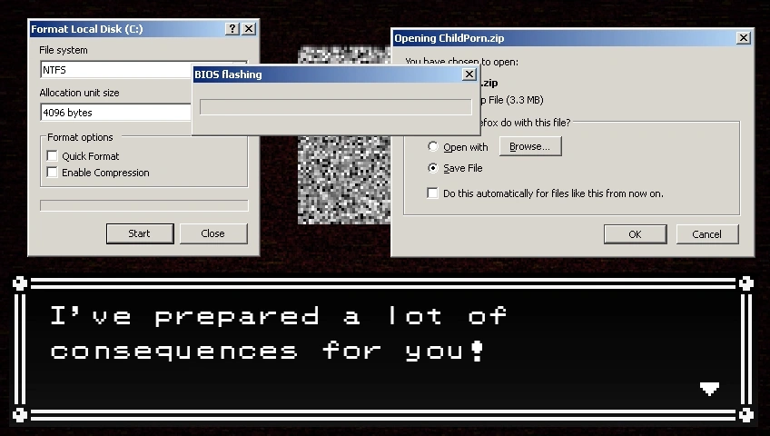
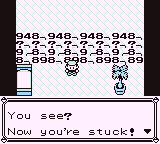
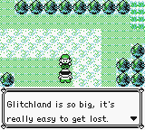
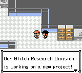
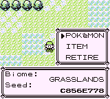
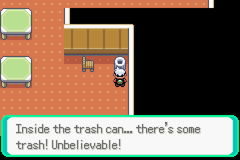
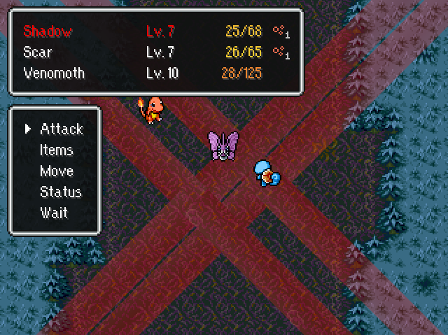
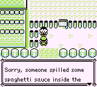
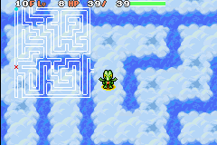

Hi! I like glitching old Pokémon games. A lot.
Imagine you're a kid in the 90s, booting up your favorite game on the SNES - Super Mario World. You load the save file, and suddenly, you're playing Tetris instead!
In theory, this is actually possible. If there's a bug in the game that causes it to run untrusted code from your save data, the game could be reprogrammed to do anything. And then you can play Pong and Snake on your Super Mario World cartridge.
This trick is called arbitrary code execution, or ACE for short. I happen to be one of the first people who played with the concept of arbitrary code execution in retro games, back in 2013. I am often credited for developing the first reliable ACE methods in Gen I and II Pokémon games. I helped a bit with Gen III too.
The whole idea seemed mindblowing to me. Running a game within a game? And so it began.
Every April since 2016, I do something special for the Pokémon glitching community - challenges contained within Pokémon save files, created with arbitrary code execution exploits. They were pretty niche and specific originally, but starting from 2018, each challenge is a universally enjoyable game that comes with an online leaderboard and a set of optional CTF-like hacking tasks.
These were originally intended to be small projects, but eventually, the power creep went out of control, and I started going beyond constraints of save files. This culminated in 2024, where I accidentally ended up making a full scale vaguely PMD-themed fangame concluding all of my lore, centered around a turn-based battle system inspired by Final Fantasy XIV raids (???). After that, I went back to making simpler experiences.
Wanna check out my niche nerd stuff?

TheZZAZZGlitch is bringing excessive attention to the world of glitches. This angers MissingNo., the Glitch Lord, who traps him. It's your time to distract MissingNo. by participating in their goofy glitch knowledge quiz, while TheZZAZZGlitch prepares an 8F ACE payload for everyone's escape. A lot of Undertale references are included.
Download (mirror) | Summary video

TheZZAZZGlitch tries to distribute his 8F scripts for making pizza and curing cancer, but MissingNo. takes revenge and infects the save file before it gets uploaded! Instead, the players end up facing a series of puzzles, which require hacking the game to progress. Some Gen I glitching knowledge may be required. Get your GameShark ready!
Play (event site) | Summary video

A new region called Glitchland was discovered; and with its discovery, the floodgates for adventurers have opened. The region features 131 different maps to explore, downloaded from the Internet via the Game Boy's link cable port. Can you discover all of the secrets of this brand new world?
Play (unofficial server) | Event site | Summary video

Missingno., the Glitch Lord has invaded Glitch Islands, turning everyone's once peaceful life into a nightmare. Visit each one of nine different kingdoms - small worlds open for exploration, with unique quests to complete. Rescue all inhabitants under Missingno.'s possession, then defeat the Glitch Lord himself.
Play (unofficial server) | Event site | Summary video

Welcome to Glitchtopia - the infinite mysterious world corrupted by Glitch Lord's malice. Explore a procedurally generated map in search of clues about the surrounding world. Look for items, complete tasks, and find out just for how long you'll be able to survive...
Play (event site) | Summary video

Four years have passed, and during that time, the people in Glitchland seems to have moved on with their lives. Explore a revamped version of Glitchland, the area from 2018, and see how much has changed since you were gone. You'll get to see some old familiar faces, and meet some new ones too!
Play (unofficial server) | Event site | Summary video

The Glitch Lord, having failed to attain control over Glitchland and Glitch Islands, moved towards Glitchtopia, where he makes his final stand. With two out of three of these kingdoms freed, it should be no problem to liberate the third one, and finally put an end to Missingno.'s plans once and for all!
Play (event site) | Summary video

With Glitchland, Glitch Islands and Glitchtopia at peace, the locals are taking their well deserved vacation in Kanto. Look around for them and try to help them with any issues they might have. They might give you some interesting information about their worlds in exchange!
Play (event site) | Summary video

In the distant region of Glitchtopia, a strange tower shot up from the ground. No one knows where it came from - one day, it was just there. Explorers started to investigate, but no one ever returned from the journey. Perhaps you will be able to make it?
Play (event site) | Summary video
An observant reader might have noticed that 2020 and 2023 are missing from the list. Good job, observant reader!